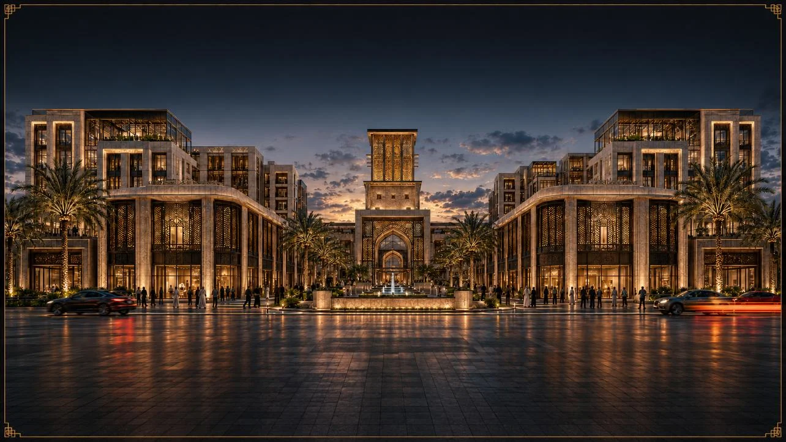
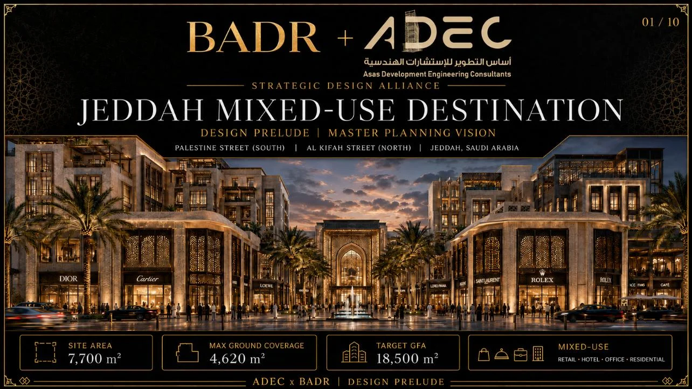
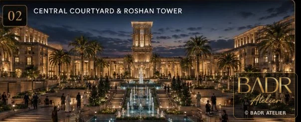
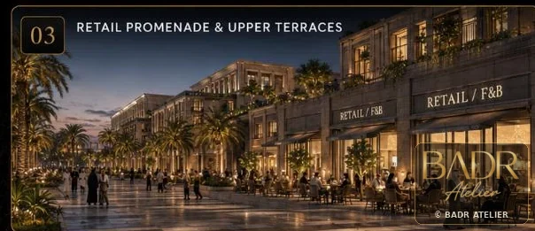
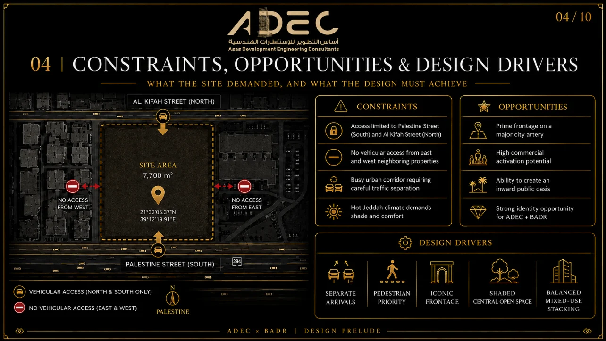
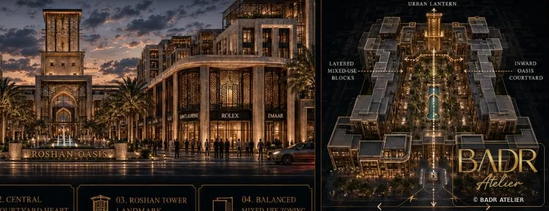
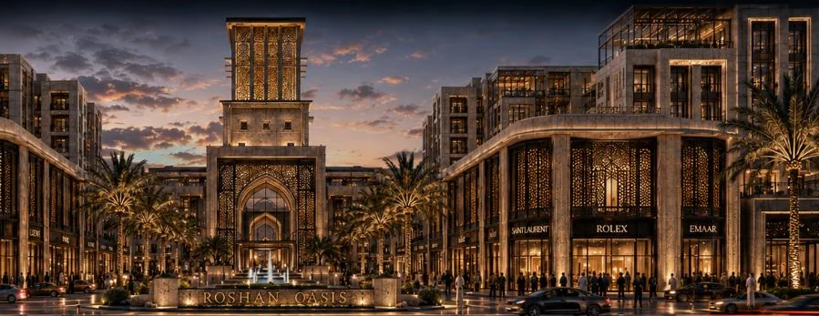
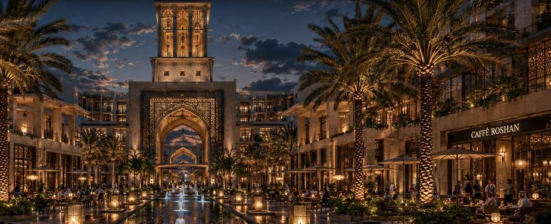
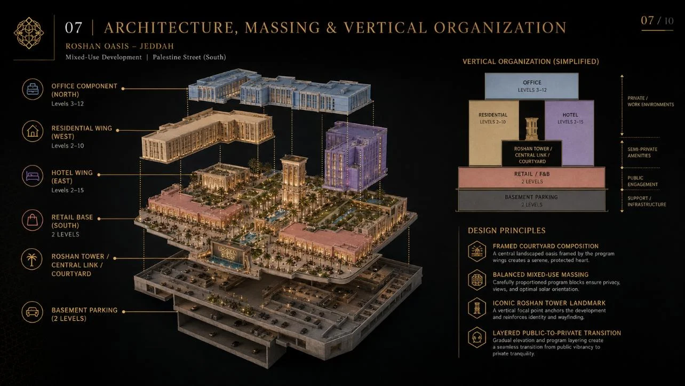

01
Roshan Oasis
A landscape-led urban oasis shaped by water, shaded promenades and a central social heart.
A strategic set of Jeddah development concepts exploring distinct identities such as Roshan Oasis, Palestine Gate and Jeddah Courtyard.
The file is treated as a portfolio of options: each concept gives a different answer to the same development question — what should this site become, and how should the first image in the market feel?
Multiple design narratives tested to translate land, market and identity into differentiated development directions.
A visual sequence of architecture, atmosphere, movement and detail.








